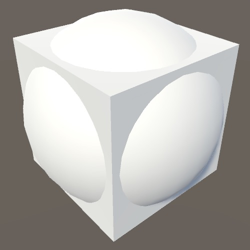
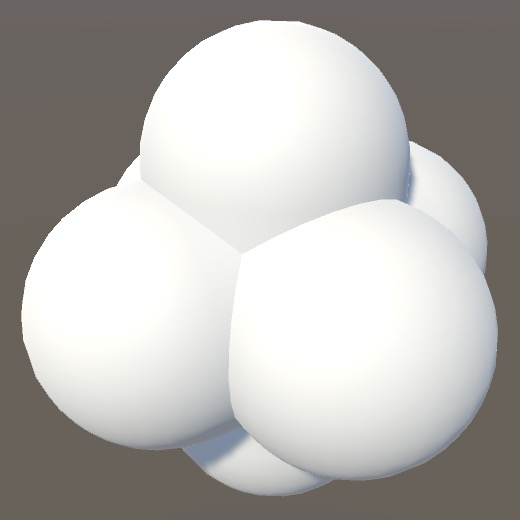
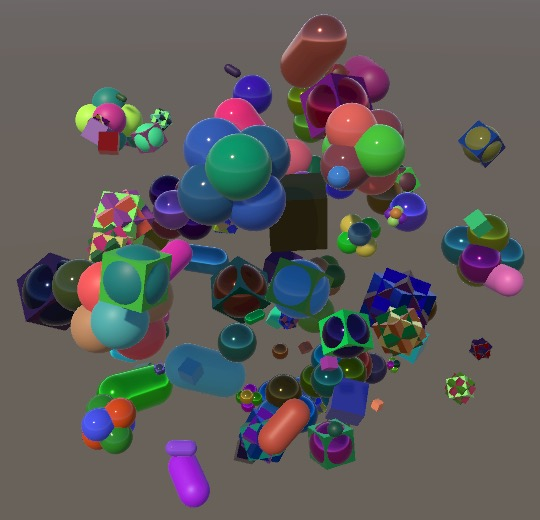
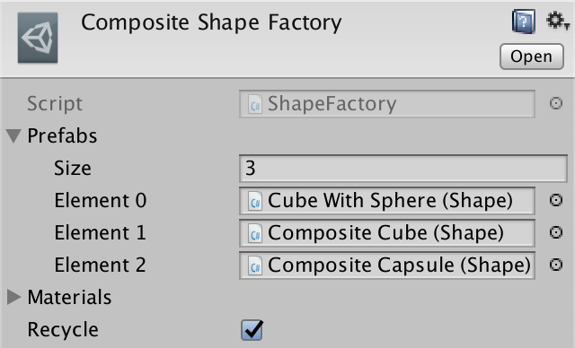
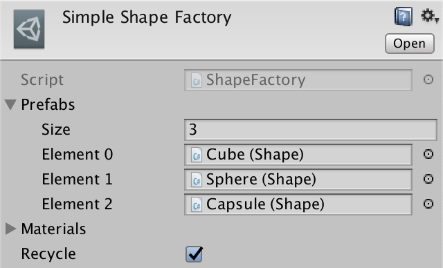

More Factories
Where Shapes Come From
- Create composite shapes.
- Support multiple colors per shape.
- Select factories per spawn zone.
- Keep track of a shape's origin factory.
This is the eighth tutorial in a series about Object Management. It introduces the concept of working with more than one factory, along with more complex shapes.
This tutorial is made with Unity 2017.4.12f1.
More Shapes
Cubes, spheres, and capsules aren't the only shapes that we can use. We could import any mesh. Also, shapes need not consist of a single object. A shape can have an object hierarchy of its own, with multiple meshes, animations, behaviors, and other things. To illustrate this, we'll create a few composite shapes by combining multiple default meshes.
Cube With Sphere
We begin by simply combining a single cube with a sphere. First create a cube object, followed by a sphere, both positioned at the origin. Then make the sphere a child of the cube. At their default scales the sphere is hidden inside the cube. Increase the sphere's scale so it intersects the cube's faces. At scale √2 the sphere would touch the edges of the cube. Using a smaller scale—like 1.35—gives us bulges on each of the cube's faces.

To turn it into a proper shape, add the Shape component to the root cube object. Also set the materials of both objects to the same white material used by all other shapes. Then turn it into a prefab.
Composite Capsule
A more complex shape can be made by combining three rotated capsules. Begin with a default capsule, then give it two child capsules. Rotate the children 90°, one around its X axis and the other around its Z axis. The result is a rounded shape with six protrusions along the main axes, somewhat like the previous shape but without the cube.

Again add the Shape component to the root capsule and set the materials, and then turn it into a prefab.
Composite Cube
For our final composite shape, we do the same but now with a cube and two cube children. In this case, rotate the children 45° along two axes, XY for one and YZ for the other. This creates one of the cube 3-compound variants, a complex shape with cross-like extrusions.
Add the Shape component to the root cube and turn it into a prefab too.
Spawning the New Shapes
To make it possible to spawn these new shapes, all we have to do is add them to our factory.
From now on the new shapes can be spawned along with the old ones. But they appear mostly white, because only the root object with the Shape component gets a random material and color. The child objects are unaffected.
Configuring Which Renderers to Adjust
To change the color and material of all objects that are part of a composite shape, Shape needs to access all the relevant MeshRenderer components. Let's give it a configurable array for this purpose.
[SerializeField] MeshRenderer[] meshRenderers;
Now we have to go through all shape prefabs and manually include all renderers that need to be affected. Note that this makes it possible to exclude some on purpose, so some parts of a shape can have a fixed material. You can directly drag an object onto the array, Unity will turn it into a reference to its renderer.
Shape no longer needs to retrieve a single renderer component when it awakens, so the meshRenderer field and the Awake method can be removed.
//MeshRenderer meshRenderer;//void Awake () {// meshRenderer = GetComponent<MeshRenderer>();//}
In SetMaterial, we must loop through all renderers and set their material to the provided one.
public void SetMaterial (Material material, int materialId) {
for (int i = 0; i < meshRenderers.Length; i++) {
meshRenderers[i].material = material;
}
MaterialId = materialId;
}
And the same goes for SetColor.
public void SetColor (Color color) {
this.color = color;
if (sharedPropertyBlock == null) {
sharedPropertyBlock = new MaterialPropertyBlock();
}
sharedPropertyBlock.SetColor(colorPropertyId, color);
for (int i = 0; i < meshRenderers.Length; i++) {
meshRenderers[i].SetPropertyBlock(sharedPropertyBlock);
}
}
Nonuniform Color
We now end up with uniformly colored composite shapes, assuming all their renderers were setup to be affected. But we don't have to limit ourselves to a single color per shape. Let's make it possible for each part of a composite shape to have its own color.
To support multiple colors per shape while still being able to save it correctly, we have to replace the color field with a colors array. The array should be created when the shape awakens, its length being the same as the length of the meshRenderers array. So we again need an Awake method.
//Color color;Color[] colors; void Awake () { colors = new Color[meshRenderers.Length]; }
When a color is configured via SetColor, all elements of the colors array have to be set too.
public void SetColor (Color color) {
//this.color = color;
if (sharedPropertyBlock == null) {
sharedPropertyBlock = new MaterialPropertyBlock();
}
sharedPropertyBlock.SetColor(colorPropertyId, color);
for (int i = 0; i < meshRenderers.Length; i++) {
colors[i] = color;
meshRenderers[i].SetPropertyBlock(sharedPropertyBlock);
}
}
But that still makes all colors the same. To support different colors per renderer, add a variant SetColor method that only adjusts a single color element, identified via an index parameter.
public void SetColor (Color color, int index) {
if (sharedPropertyBlock == null) {
sharedPropertyBlock = new MaterialPropertyBlock();
}
sharedPropertyBlock.SetColor(colorPropertyId, color);
colors[index] = color;
meshRenderers[index].SetPropertyBlock(sharedPropertyBlock);
}
That requires outside knowledge of how many colors there are, so add a public ColorCount getter property, which simply returns the length of the colors array.
public int ColorCount {
get {
return colors.Length;
}
}
Saving all Colors
Our code doesn't compile yet, because we also have to change how the color data is saved. First, increase the save version in Game to 5.
const int saveVersion = 5;
Then adjust Shape.Save so it writes all its colors instead of the old color field.
public override void Save (GameDataWriter writer) {
base.Save(writer);
//writer.Write(color);
for (int i = 0; i < colors.Length; i++) {
writer.Write(colors[i]);
}
writer.Write(AngularVelocity);
writer.Write(Velocity);
}
When loading, we now have to read a color and invoke SetColor for each element, if we're loading a version 5 or higher file. Otherwise, we set a single color, as before.
public override void Load (GameDataReader reader) {
base.Load(reader);
if (reader.Version >= 5) {
for (int i = 0; i < colors.Length; i++) {
SetColor(reader.ReadColor(), i);
}
}
else {
SetColor(reader.Version > 0 ? reader.ReadColor() : Color.white);
}
AngularVelocity =
reader.Version >= 4 ? reader.ReadVector3() : Vector3.zero;
Velocity = reader.Version >= 4 ? reader.ReadVector3() : Vector3.zero;
}
Optional Uniform Color
Whether shapes should have a uniform color or not is something that can be decided per spawn zone. So add a uniformColor toggle to SpawnZone.SpawnConfiguration.
public struct SpawnConfiguration {
…
public bool uniformColor;
}
When we configure a freshly-spawned shape and we don't want uniform colors, instead pick a random color for each color index.
public virtual void ConfigureSpawn (Shape shape) {
Transform t = shape.transform;
t.localPosition = SpawnPoint;
t.localRotation = Random.rotation;
t.localScale = Vector3.one * spawnConfig.scale.RandomValueInRange;
if (spawnConfig.uniformColor) {
shape.SetColor(spawnConfig.color.RandomInRange);
}
else {
for (int i = 0; i < shape.ColorCount; i++) {
shape.SetColor(spawnConfig.color.RandomInRange, i);
}
}
shape.AngularVelocity =
Random.onUnitSphere * spawnConfig.angularSpeed.RandomValueInRange;
…
}

Robust Saving
At this point we support composite shapes, which can have a different color per renderer. But we might decide to change which renderers are colorable in the future. When that happens, the amount of colors changes, but how many colors that are stored in old save files remains the same. That would result in a mismatch that will cause loading to fail. To prevent that, we can make the save format future-proof by also storing the amount of colors that we save, just like we do for the shape list.
public override void Save (GameDataWriter writer) {
base.Save(writer);
writer.Write(colors.Length);
for (int i = 0; i < colors.Length; i++) {
writer.Write(colors[i]);
}
writer.Write(AngularVelocity);
writer.Write(Velocity);
}
Loading colors now becomes a bit more complex, so let's move that code to a separate LoadColors method.
if (reader.Version >= 5) {
//for (int i = 0; i < colors.Length; i++) {
// SetColor(reader.ReadColor(), i);
//}
LoadColors(reader);
}
When loading the colors, we must first read the amount that were saved, which might not match the amount of colors that we are currently expecting. The maximum amount of colors that we can safely read and set is equal to either the loaded or current count, whichever is lower. But there may be work left to do after that, so define the iterator variable outside the loop, for later use.
void LoadColors (GameDataReader reader) {
int count = reader.ReadInt();
int max = count <= colors.Length ? count : colors.Length;
int i = 0;
for (; i < max; i++) {
SetColor(reader.ReadColor(), i);
}
}
That's all that we have to do when both counts end up equal, which should nearly always be the case. But if they're different, then there are two possibilities. The first case is that we have stored more colors than we currently need. This means that there are more colors saved, which we must read, even though we don't use them.
for (; i < max; i++) {
SetColor(reader.ReadColor(), i);
}
if (count > colors.Length) {
for (; i < count; i++) {
reader.ReadColor();
}
}
The other case is that we have stored less colors than we currently need. We've read all data that was available, but still have colors to set. We cannot ignore them, because then we end up with arbitrary colors. We have to be consistent, so just set the remaining colors to white.
if (count > colors.Length) {
for (; i < count; i++) {
reader.ReadColor();
}
}
else if (count < colors.Length) {
for (; i < colors.Length; i++) {
SetColor(Color.white, i);
}
}
A Second Factory
We currently use a single factory to take care of all shape instances. That works fine when we have only a few shapes and don't care to classify them into subcategories. But at this point we can identify two shape categories: simple and composite. Using a separate factory per category makes it possible to treat them differently, giving us more control over what shapes are spawned.
Composite Shape Factory
Create another shape factory asset, by duplicating the existing factory. Keep the materials the same but make sure that it only references the three composite shape prefabs. Name it Composite Shape Factory. Rename the original factory to Simple Shape Factory and remove the composite prefab references from it.
 
We can now control whether solely simple or composite shapes are spawned, by assigning the corresponding factory to Game.
Factories per Spawn Zone
With more than one factory to choose from when spawning, it now makes sense to select a factory per spawn zone, instead of globally for the entire game. And we don't have to limit ourselves to the choice of a single factory. Instead, we'll add an array of factory references to SpawnZone.SpawnConfiguration.
public struct SpawnConfiguration {
public enum MovementDirection {
…
}
public ShapeFactory[] factories;
public MovementDirection movementDirection;
…
}
Give each spawn zone references to the factories you want it to use when spawning shapes. At least one factory is required per zone, but you can provide more than one. When spawning, we'll pick one of the factories at random.
You can also include a factory more than once. That makes it more likely to be chosen. For example, including the composite factory twice and the simple factory only once will make it twice as likely for a composite shape to be spawned than a simple shape.
Spawning instead of Configuring
With the factories chosen per zone, it is no longer the job of Game to spawn new shapes. It is now the responsibility of SpawnZone to spawn shapes, not just configure them. But Game still needs to keep track of the shapes. So we'll change the SpawnZone.ConfigureSpawn method to SpawnShape, which doesn't have a parameter and returns the new shape it spawns, using one of the configured factories.
//public virtual void ConfigureSpawn (Shape shape) {public virtual Shape SpawnShape () { int factoryIndex = Random.Range(0, spawnConfig.factories.Length); Shape shape = spawnConfig.factories[factoryIndex].GetRandom(); Transform t = shape.transform; … shape.Velocity = direction * spawnConfig.speed.RandomValueInRange; return shape; }
Make the same change to CompositeSpawnZone.
//public override void ConfigureSpawn (Shape shape) {public override Shape SpawnShape () { if (overrideConfig) { return base.SpawnShape(); } else { … return spawnZones[index].SpawnShape(); } }
And also turn ConfigureSpawn into SpawnShape in GameLevel.
//public void ConfigureSpawn(Shape shape) {public Shape SpawnShape () { return spawnZone.SpawnShape(); }
Finally, Game.CreateShape now only has to invoke SpawnShape on the current level and add the returned shape to its list.
void CreateShape () {
//Shape instance = shapeFactory.GetRandom();
//GameLevel.Current.ConfigureSpawn(instance);
shapes.Add(GameLevel.Current.SpawnShape());
}
Recycling Shapes
Because we're using two factories, we can also get two factory scenes when playing the game, with shapes ending up in their corresponding factory scene.
While the creation of shapes via different factories appears to work correctly, their reuse goes wrong. All shapes end up reclaimed by one factory, which messes it up. That's because Game always uses the same factory to reclaim shapes, no matter where they were spawned.
Shapes must be reclaimed by the same factory that spawned them. To make that possible, each shape has to keep track of the factory where it originated from. Add an OriginFactory property to Shape, similar to ShapeId but for a ShapeFactory reference.
public ShapeFactory OriginFactory {
get {
return originFactory;
}
set {
if (originFactory == null) {
originFactory = value;
}
else {
Debug.LogError("Not allowed to change origin factory.");
}
}
}
ShapeFactory originFactory;
Have ShapeFactory set itself as the origin of each shape instance that it spawns.
public Shape Get (int shapeId = 0, int materialId = 0) {
Shape instance;
if (recycle) {
…
else {
instance = Instantiate(prefabs[shapeId]);
instance.OriginFactory = this;
instance.ShapeId = shapeId;
SceneManager.MoveGameObjectToScene(
instance.gameObject, poolScene
);
}
}
…
}
Now we can use the correct factory to reclaim each shape. But instead of writing something like shape.OriginFactory.Reclaim(shape), we'll add a convenient Recycle method to Shape so we can just invoke than when we no longer need it.
public void Recycle () {
OriginFactory.Reclaim(this);
}
Use that method in Game.DestroyShape.
void DestroyShape () {
if (shapes.Count > 0) {
int index = Random.Range(0, shapes.Count);
//shapeFactory.Reclaim(shapes[index]);
shapes[index].Recycle();
…
}
}
And also in BeginNewGame.
void BeginNewGame () {
…
for (int i = 0; i < shapes.Count; i++) {
//shapeFactory.Reclaim(shapes[i]);
shapes[i].Recycle();
}
shapes.Clear();
}
To be perfectly safe, have ShapeFactory check whether it is indeed the origin of the shape that it is trying to reclaim. If not, log an error and abort.
public void Reclaim (Shape shapeToRecycle) {
if (shapeToRecycle.OriginFactory != this) {
Debug.LogError("Tried to reclaim shape with wrong factory.");
return;
}
…
}
Saving Origin Factories
Saving and loading also has to be adjusted to support multiple factories. We have to save the origin factory of each shape, but it's not possible to write the factory assets themselves. Instead, we have to somehow keep track of which factory was used, in between game sessions. We can do that by assigning each factory an ID number and saving that. Add a FactoryId property to ShapeFactory for this purpose. We won't set it manually via the inspector, instead we'll have the game assign these IDs automatically. Once again—like ShapeId—the property is allowed to be set only once. But in this case we're dealing with an asset that persists beyond play sessions in the editor, so we have to explicitly mark the field so it won't be serialized, by attaching the System.NonSerialized attribute to it.
public int FactoryId {
get {
return factoryId;
}
set {
if (factoryId == int.MinValue && value != int.MinValue) {
factoryId = value;
}
else {
Debug.Log("Not allowed to change factoryId.");
}
}
}
[System.NonSerialized]
int factoryId = int.MinValue;
To assign the IDs and get a reference to all factories, we add a factory array to Game. We then use that array's indices for the factory IDs, assigning them in OnEnable.
[SerializeField] ShapeFactory[] shapeFactories;
…
void OnEnable () {
for (int i = 0; i < shapeFactories.Length; i++) {
shapeFactories[i].FactoryId = i;
}
}
We have to use OnEnable so we regenerate the IDs after a hot reload. But OnEnable also gets invoked after a game finished loading, in which case we should not re-assign the IDs. We can avoid that by checking whether the first ID is not yet setup correctly.
void OnEnable () {
if (shapeFactories[0].FactoryId != 0) {
for (int i = 0; i < shapeFactories.Length; i++) {
shapeFactories[i].FactoryId = i;
}
}
}
When saving a shape, we now also have to save the ID of its origin factory. As picking the factory is the first step of creating a shape, also make it the first thing we write per shape.
public override void Save (GameDataWriter writer) {
…
for (int i = 0; i < shapes.Count; i++) {
writer.Write(shapes[i].OriginFactory.FactoryId);
writer.Write(shapes[i].ShapeId);
writer.Write(shapes[i].MaterialId);
shapes[i].Save(writer);
}
}
When loading a shape, its factory ID is the first thing to be read, unless we're reading from an old save file. In that case, we'll use zero as the default factory ID. Then use the ID to retrieve the correct factory when getting a shape instance.
IEnumerator LoadGame (GameDataReader reader) {
…
for (int i = 0; i < count; i++) {
int factoryId = version >= 5 ? reader.ReadInt() : 0;
int shapeId = version > 0 ? reader.ReadInt() : 0;
int materialId = version > 0 ? reader.ReadInt() : 0;
Shape instance = shapeFactories[factoryId].Get(shapeId, materialId);
instance.Load(reader);
shapes.Add(instance);
}
}
At this point we no longer need the old singular shapeFactory field, so remove it.
//[SerializeField] ShapeFactory shapeFactory;
All factories that are used in any level have to be assigned to Game. Make sure that the Simple Shape Factory is the first one, so it gets used when loading old safe files. Just like for the prefabs of each factory, once a factory gets added to this array, it cannot be removed again or change position, to guarantee that save files are loaded correctly.
The next tutorial is Shape Behavior.